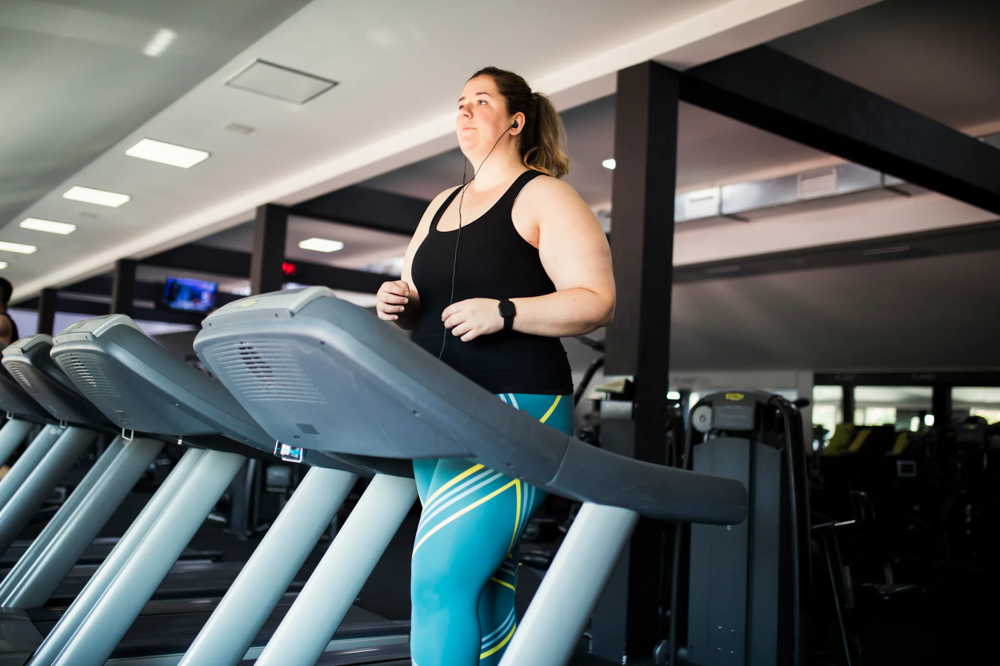
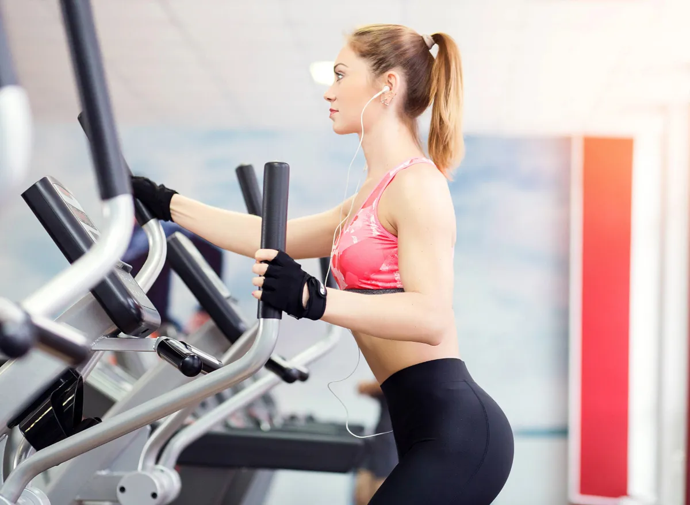
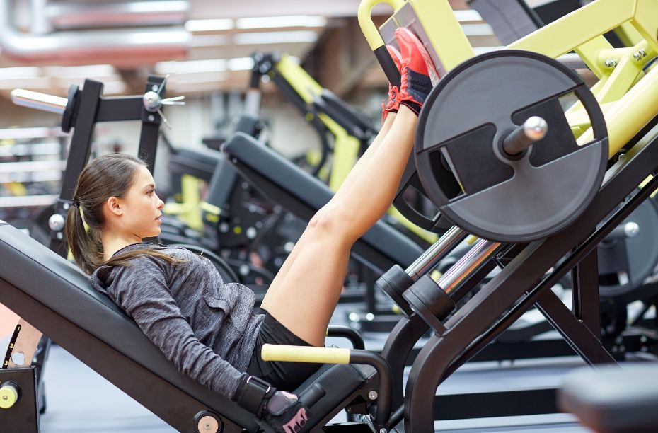
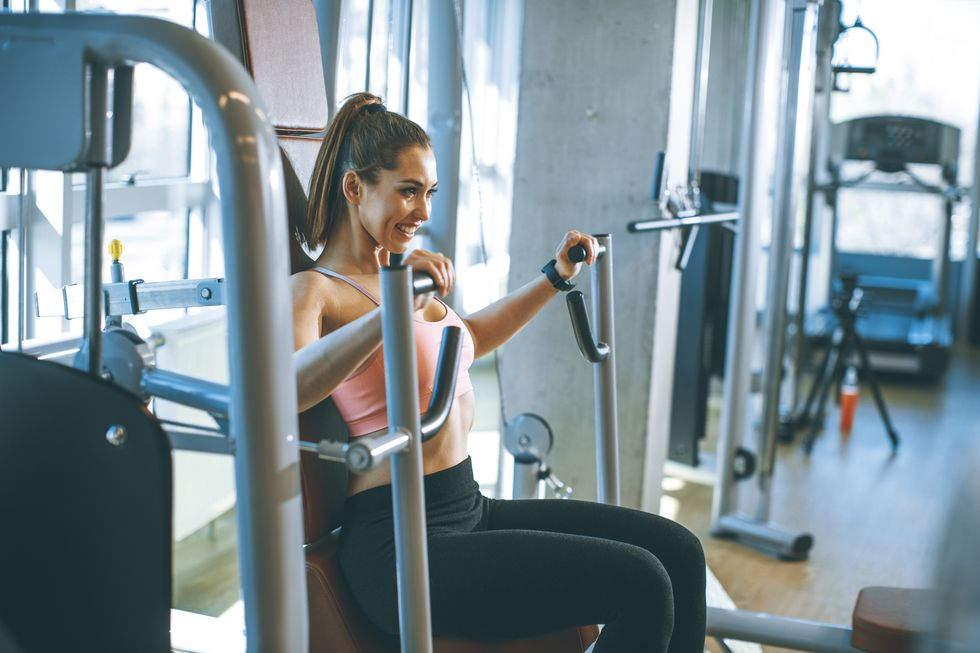
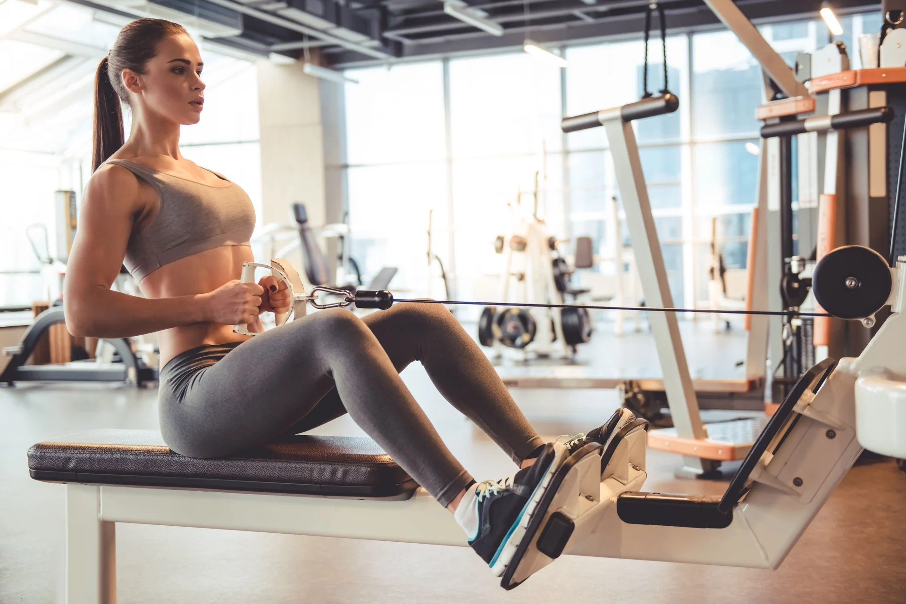
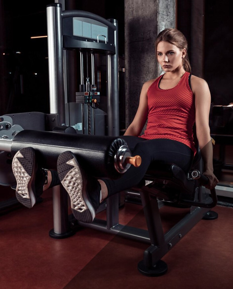
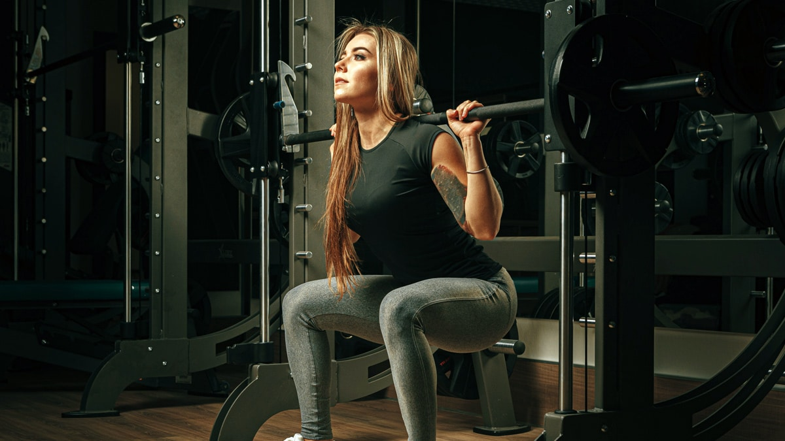
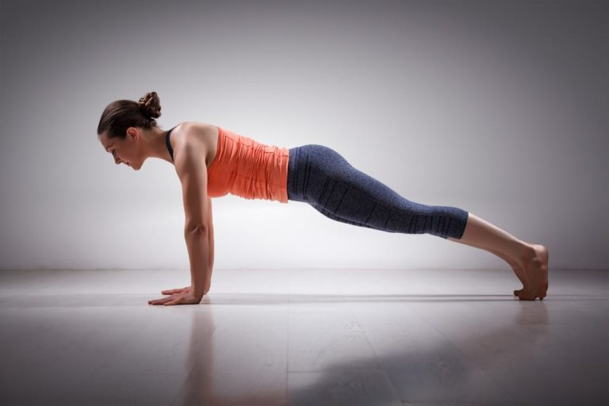

新手常用的 8 台器械，每台一张真人实拍图 + 怎么调、怎么做、错在哪。去健身房之前先看一遍，到地方照着图找机器、照着步骤做。通用健康科普，不构成医疗建议。
⚠️ 没有教练、一个人练：只用下面这些固定器械，不冲大重量，每组留 2 次余力，关节疼立刻停。
练哪：热身 / 有氧 难度：★

怎么调：站上跑带再按开始；速度从 4km/h 起，坡度先 0。新手热身用快走就行，别一上来就跑。
常见错误：扶着扶手把身体吊起来走（等于没练）；跑带还在转就跳下来；穿拖鞋、凉鞋上跑步机。
自我检查：能正常说话、不喘不上气就是合适的热身强度。
图：Getty Images（经 Bustle 转载）
练哪：热身 / 有氧 难度：★ 对膝盖最友好

怎么调：双脚踩上踏板，选阻力 1–3 档起步；双手握住活动扶手或固定扶手。
常见错误：身体前倾趴在扶手上；阻力调太高、膝盖打晃；脚跟离地只用前脚掌蹬。
自我检查：膝盖不疼、呼吸均匀；怕跑步伤膝就用它代替跑步机。
图：Eat This, Not That!
练哪：大腿前侧、臀部 难度：★★

怎么调：先调座椅前后，让屈膝时大腿和小腿约 90 度；插销插到最轻的两三片。
呼吸：蹬出时呼气，下放时吸气。
常见错误：膝盖内扣；蹬到膝盖锁死；屁股离开座椅、下放过深顶到腰。
自我检查：膝盖全程对着第二根脚趾的方向，腰没离开靠背。
图：365sport.nl
练哪：胸、手臂后侧 难度：★★

怎么调：调座椅高度，让把手对着胸口中部；插销插到最轻的两三片。
呼吸：推出时呼气，收回时吸气。
常见错误：耸肩用斜方肌发力；肘关节锁死猛推；腰离开靠背借力。
自我检查：肩膀没耸起来、腰没离开靠背，推的时候胸在用力不是手臂在甩。
图：AtemUser
练哪：背部、手臂 难度：★★

怎么调：坐在长凳上，双脚踩实脚踏、膝盖微弯；选一个双手握把（V 形把或横把）；插销插到最轻的两三片。
呼吸：拉时呼气，送回时吸气。
常见错误：用腰前后甩着拉；手臂先动、后背没发力；送回时撒手让配重砸下来。
自我检查：身体没前后晃、不是用腰在甩，拉的时候后背先收紧。
图：Sport Life
练哪：大腿后侧 难度：★★

怎么调：坐好，调好挡板位置，让滚轮压在小腿下部（脚踝上方）；插销插到最轻的两三片。
呼吸：弯时呼气，放回时吸气。
常见错误：大腿离开座椅借力；放回时撒手让配重砸；滚轮压在小腿肚子上磨得疼。
自我检查：大腿没离开座椅，动作全程匀速。
图：WF Athletic Supply
练哪：腿、臀 难度：★★★ 先别急着用，练满一个月再说

这是什么：一根杠铃固定在两条轨道上，只能上下动，比自由杠铃稳得多；想练深蹲先从它开始。两侧有安全卡扣，卡扣调到蹲到底的高度，万一站不起来，杠会落在卡扣上。
呼吸：下蹲时吸气，站起时呼气。
常见错误：杠压在脖子上；脚站得太靠后、膝盖超过脚尖太多；没调安全卡扣就直接蹲。
自我检查：蹲到底时膝盖对着脚尖、脚跟没离地，站起来时身体没有前倾栽倒。
图：Fitness Volt
练哪：核心（肚子、腰） 难度：★

怎么用：在瑜伽垫上做，不用器械；垫子铺在平地上，别在跑步机旁边做。
常见错误：塌腰（腰酸就是信号）；屁股撅太高；憋气做完头晕。
自我检查：侧面看身体是一条直线，腰不酸、肚子在抖就是对的；腰酸了就先下来休息。
图：Thrive Personal Fitness
图片为网上公开的真人实拍图，仅作动作示意；出处见每张图下方标注。本页为通用健康科普，不构成医疗建议。